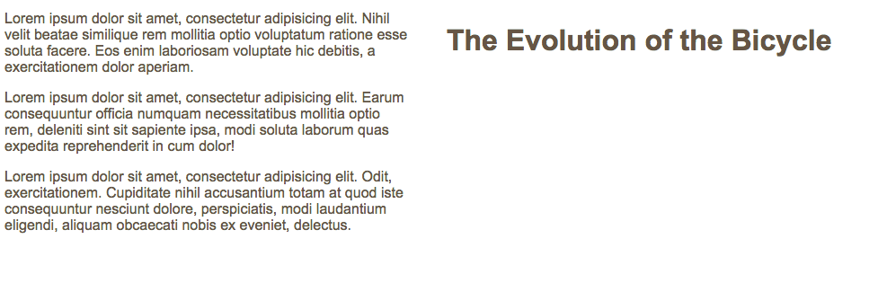

What are the differences between relative, absolute, fixed, and static positioning?
Relative Position
Relative positioing moves an element in relation to where it would have been in normal flow.
Results appears and it should
With CSS property to paragraph tab
Results after applied CSS changes. Use offset properties (top or bottom and left or right) to indicate how far to move an element from where it would have been in normal flow.
Absolute
The box is taken out of normal flow and no longer affects the position of other boxes.
With CSS applied to heading

The box offset properties (top or bottom and left or right) specify where the element should appear in relation to its containing element
Fixed
An element with position: fixed; is positioned relative to the viewport, which means it always stays in the same place even if the page is scrolled. The top, right, bottom, and left properties are used to position the element.
With CSS applied to heading
To control where the fixed position position box appears in relation to the browser window, the box offset property is used.
Static
In normal flow, each block-level element sits on top of the next one. Since this is the default way in which browsers treat HTML elements, you do not need a CSSS property to indicate tht element should appear in normal flow.